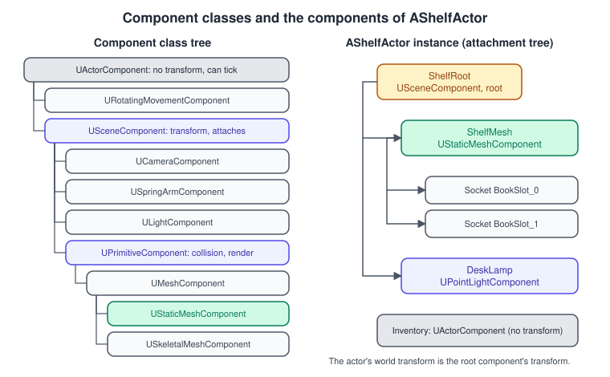
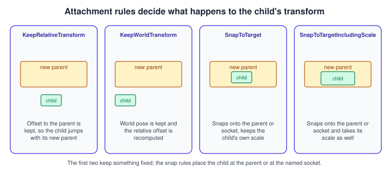
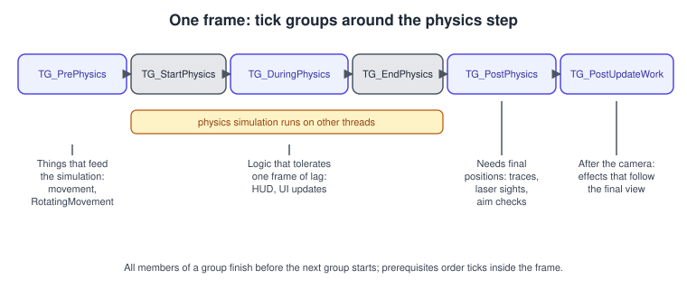
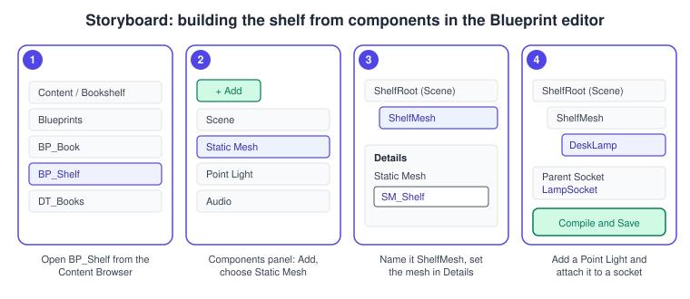

Actors and Components
|
This content was generated with the assistance of AI and should be verified against the official documentation before being relied on in production. |
An actor is the unit of gameplay in Unreal Engine: anything that can be placed in a level or spawned while the game runs, from a camera to a book to the player’s character. An actor does very little by itself.
Its behaviour and its look come from the components attached to it: a mesh, a light, a movement model, an inventory. This composition is the core of how Unreal scenes are built, and the first thing a Unity developer maps to
GameObject and MonoBehaviour. This page covers both halves, the order in which the engine calls an actor’s functions, and the Bookshelf’s first two actors, ABookActor and AShelfActor.
The facts were checked in November 2026 against the Unreal Engine 5.8 documentation (released on 2026-06-17, latest hotfix found 5.8.4). The examples are C++ for the Bookshelf module of the Third Person template, built with Visual Studio 2022 17.14 or newer
(VS 2026 recommended) or Xcode, and run unchanged on Windows, macOS, Linux, Android and iOS. They use the object-system rules from
UObject, Reflection and Garbage Collection and the shared model bookshelf.glb, imported with its textures into /Game/Bookshelf/Meshes.
The classes that decide who owns an actor in a running game are on Gameplay Framework.
Actors
AActor is the base class of everything that can be placed or spawned in a level. The Epic documentation describes the features this gives you: actors can be translated, rotated and scaled; gameplay code in C++ or Blueprints can create and remove them;
they tick; and they can be replicated over the network. Three facts shape the rest of the page.
-
An actor has no transform of its own. It uses the transform of its root component. If the root is not a scene component, the actor has no location, rotation or scale.
GetActorLocation()andSetActorLocation()read and write the root component’s transform. -
Spawning is the creation of an instance. The generic function is
SpawnActor; actors that already sit in a level are loaded from disk instead. Both paths end in the same lifecycle functions (described below). -
The world holds actors alive. Actors are referenced by their level, so they are not garbage collected while they exist in the world.
Destroy()removes an actor from the level and marks it for collection; the memory is reclaimed in a later pass.
An actor class is data plus code: a Blueprint derived from ABookActor is the Unreal counterpart of a Unity prefab, and a level (a map) holds instances the way a Unity scene does.
Epic’s overview for Unity developers equates Unity components with actor components and scene components, and says an actor is a C++ class you extend by inheritance, unlike a GameObject. See
Unity GameObjects, Components and Transforms for the other side of the comparison.
Components

There are three main kinds of component, each a subclass of the previous one:
| Class | Provides | Typical use |
|---|---|---|
|
Behaviour only. It has no location in the world, can tick, and can be created at any time. |
Logic such as movement models, inventories, AI or input handling. |
|
A transform (location, rotation, scale), and the ability to attach to other scene components in a hierarchy. |
Grouping nodes, cameras, spring arms, audio sources, forces. |
|
A scene component with geometry: it can be rendered and collided with, and carries the physics and collision settings. |
Static and skeletal meshes, particle systems, box, sphere and capsule collision volumes, lights as shapes. |
The Epic page adds the rules of attachment. Only scene components can attach. A component can have many children but one parent, and attachment cycles are not allowed. An actor designates one scene component as its root; attaching the root of one actor to a component of another links the two actors, so that moving the parent moves the child.
Creating components
-
In the constructor, with
CreateDefaultSubobject<T>(TEXT("Name")). Components made this way are registered automatically when the actor is spawned. Keep each in aUPROPERTYmember, so that it is managed and collected correctly. In a constructor useSetupAttachment(the component is not registered yet), and make exactly one scene component the root withSetRootComponent. -
In the Blueprint editor, with the Add button of the Components panel (procedure below). These components are created from the Blueprint’s own default subobject list.
-
At runtime, with
NewObject<T>(Actor)followed byRegisterComponent(). The component must belong to an actor. The Epic page warns that registering components during play can hurt performance, so do it only when necessary. Attach it afterwards withAttachToComponent.
Components can also be destroyed with DestroyComponent(); the actor’s reflected references to them are then set to null, so code must handle null.
Mobility
Every scene component has a Mobility setting: Static (never moves, lets the engine bake or cache work), Stationary (the transform is fixed but properties such as light colour can change) or Movable (can move at runtime). A component attached to a movable parent should be movable too; a static component that you try to move at runtime logs a warning and does not move. The mobility of lights also decides which lighting methods apply, which is covered on Lighting, Lumen and MegaLights.
Source: Components in Unreal Engine
ABookActor: a book made of components
The first Bookshelf actor is a static-mesh book that spins slowly, carries a title and a cover colour, and implements the IBookInteractable interface from the previous page. Its structure:
-
Meshis aUStaticMeshComponentand the root component. The mesh asset is chosen in the Blueprint subclassBP_Book, not hard-coded. -
RotatingMovementis aURotatingMovementComponent, an actor component that rotates its owner at a fixed rate every frame, so the book needs no code of its own to spin. -
CoverColorandBookTitleare editable properties.OnConstructioncreates a dynamic material instance from the material in slot 0 and writesCoverColorinto the vector parameter of the same name, so the book changes colour in the editor viewport as soon as the property is edited.M_BookandMI_Book_Leatherare described on Materials and the Material Editor.
// BookActor.h
#pragma once
#include "CoreMinimal.h"
#include "GameFramework/Actor.h"
#include "BookInteractable.h"
#include "BookActor.generated.h"
class UMaterialInstanceDynamic;
class UStaticMeshComponent;
class URotatingMovementComponent;
UCLASS(Blueprintable)
class BOOKSHELF_API ABookActor : public AActor, public IBookInteractable
{
GENERATED_BODY()
public:
ABookActor();
//~ Begin AActor interface
virtual void OnConstruction(const FTransform& Transform) override;
virtual void PostInitializeComponents() override;
virtual void BeginPlay() override;
virtual void EndPlay(const EEndPlayReason::Type EndPlayReason) override;
//~ End AActor interface
//~ Begin IBookInteractable interface
virtual bool Interact_Implementation(AActor* Interactor) override;
//~ End IBookInteractable interface
UFUNCTION(BlueprintCallable, Category = "Book")
void SetCoverColor(const FLinearColor& NewColor);
UPROPERTY(EditAnywhere, BlueprintReadWrite, Category = "Book")
FText BookTitle;
UPROPERTY(EditAnywhere, BlueprintReadWrite, Category = "Book", meta = (ExposeOnSpawn = "true"))
FLinearColor CoverColor = FLinearColor(0.35f, 0.12f, 0.08f);
protected:
UPROPERTY(VisibleAnywhere, BlueprintReadOnly, Category = "Components")
TObjectPtr<UStaticMeshComponent> Mesh;
UPROPERTY(VisibleAnywhere, BlueprintReadOnly, Category = "Components")
TObjectPtr<URotatingMovementComponent> RotatingMovement;
private:
void ApplyCoverColor();
/** Created per instance; Transient because it is rebuilt by OnConstruction. */
UPROPERTY(Transient)
TObjectPtr<UMaterialInstanceDynamic> DynamicMaterial;
};// BookActor.cpp
#include "BookActor.h"
#include "Bookshelf.h"
#include "Components/StaticMeshComponent.h"
#include "GameFramework/RotatingMovementComponent.h"
#include "Materials/MaterialInstanceDynamic.h"
ABookActor::ABookActor()
{
// Rotation comes from the movement component, so the tick starts disabled. It stays available
// so that a Blueprint subclass can switch it on in Class Defaults, as BP_Book does.
PrimaryActorTick.bCanEverTick = true;
PrimaryActorTick.bStartWithTickEnabled = false;
Mesh = CreateDefaultSubobject<UStaticMeshComponent>(TEXT("Mesh"));
SetRootComponent(Mesh);
RotatingMovement = CreateDefaultSubobject<URotatingMovementComponent>(TEXT("RotatingMovement"));
RotatingMovement->RotationRate = FRotator(0.0f, 45.0f, 0.0f); // pitch, yaw, roll in degrees per second
}
void ABookActor::OnConstruction(const FTransform& Transform)
{
Super::OnConstruction(Transform);
ApplyCoverColor();
}
void ABookActor::PostInitializeComponents()
{
Super::PostInitializeComponents();
UE_LOG(LogBookshelf, Verbose, TEXT("%s: components initialised"), *GetName());
}
void ABookActor::BeginPlay()
{
Super::BeginPlay();
UE_LOG(LogBookshelf, Log, TEXT("%s: BeginPlay (%s)"), *GetName(), *BookTitle.ToString());
}
void ABookActor::EndPlay(const EEndPlayReason::Type EndPlayReason)
{
UE_LOG(LogBookshelf, Log, TEXT("%s: EndPlay, reason %d"), *GetName(), static_cast<int32>(EndPlayReason));
Super::EndPlay(EndPlayReason);
}
void ABookActor::ApplyCoverColor()
{
if (!IsValid(Mesh))
{
return;
}
// Slot 0 holds the instance of M_Book (for example MI_Book_Leather). Make one dynamic copy per book.
if (!IsValid(DynamicMaterial))
{
DynamicMaterial = Mesh->CreateAndSetMaterialInstanceDynamic(0);
}
if (IsValid(DynamicMaterial))
{
DynamicMaterial->SetVectorParameterValue(TEXT("CoverColor"), CoverColor);
}
}
void ABookActor::SetCoverColor(const FLinearColor& NewColor)
{
CoverColor = NewColor;
ApplyCoverColor();
}
bool ABookActor::Interact_Implementation(AActor* Interactor)
{
// The grab behaviour is added in the Enhanced Input and Gameplay Ability System pages.
UE_LOG(LogBookshelf, Log, TEXT("%s grabbed by %s"), *BookTitle.ToString(), *GetNameSafe(Interactor));
return true;
}The generated Mesh pointer is a TObjectPtr, as the previous page explains, and SetupAttachment is not needed because the mesh is the root. In the Blueprint subclass BP_Book you pick the book mesh, set CoverColor and change the rotation rate of RotatingMovement in the Details panel, with no code. The Blueprint side of this class is on
Blueprints Visual Scripting.
The actor lifecycle
The Epic documentation describes three ways an actor enters the world, which differ only in the first steps.
-
Loaded from disk (actors that are already in a level, at map load or when a streaming level loads). The actor is deserialised,
PostLoadruns (for version fix-ups; it never runs alongsidePostActorCreated), thenPreInitializeComponents,InitializeComponentfor each component andPostInitializeComponentsrun, andBeginPlayis called when the level starts. -
Play in Editor. The editor’s actors are duplicated into a new world,
PostDuplicateruns, and the same component steps andBeginPlayfollow. -
Spawned with
UWorld::SpawnActor.PostSpawnInitializeandPostActorCreatedrun, the construction script andOnConstructionrun (Blueprint components and variables are initialised here), then the component steps, the world’sOnActorSpawnedevent, andBeginPlay. -
Deferred spawn with
SpawnActorDeferred, for actors that need properties set before construction. It follows the spawn path up toPostActorCreated, returns a valid but incomplete actor, and resumes atExecuteConstructionwhen you callFinishSpawning.
| Function | What to do there |
|---|---|
Constructor |
Create default subobjects, set defaults and tick settings. It runs for the Class Default Object, so do no gameplay. |
|
Runs when the actor is spawned and again when properties change in the editor. Derive visuals from properties here, for example the cover colour. It must be idempotent. |
|
All components exist and are initialised. Bind to component delegates here, and find sibling components. |
|
The game has started for this actor. Start gameplay, set timers, bind input, read the world. Always call |
|
Per-frame update, only if enabled. |
|
Called when the actor’s life ends. The |
EndPlay is called when Destroy is called during gameplay, when Play in Editor ends, on a level transition (seamless travel or LoadMap), when a streaming level that contains the actor is unloaded, when the actor’s lifetime expires, and when the application shuts down.
The reasons are the values of EEndPlayReason: Destroyed, LevelTransition, EndPlayInEditor, RemovedFromWorld and Quit.
AActor::Destroy marks the actor for destruction, removes it from the level’s actor array, and calls EndPlay; the garbage collector then runs BeginDestroy, may defer destruction through IsReadyForFinishDestroy, and finishes with FinishDestroy. The older OnDestroyed event is legacy, so move cleanup to EndPlay.
Do not hold a raw pointer to an actor you do not own; use a TWeakObjectPtr and test it, as the Epic page recommends, instead of checking for pending destruction by hand.
Source: Unreal Engine Actor Lifecycle
Spawning actors
UWorld::SpawnActor<T> creates an actor in the world. It returns a pointer typed as T*, or null when the spawn fails, for example because of a collision at the location. It takes the class, a transform, and spawn parameters: the owner, the instigator (the pawn responsible for damage the actor causes),
the level to spawn into, and how to resolve a collision. The most useful options of FActorSpawnParameters:
| Member | Effect |
|---|---|
|
The owning actor. Ownership decides which client may call server RPCs and what is relevant over the network. |
|
The pawn that gets blamed for damage, kills and noise the actor causes. |
|
One of |
|
The level to spawn into. By default the owner’s level, or the persistent level without an owner. |
|
An actor whose property values are copied instead of the class default object’s. |
|
Skips construction until you finish the spawn. In C++ prefer |
AShelfActor uses deferred spawning to give each book its title and cover colour before its construction runs, then attaches it to a socket. Sockets are named transforms stored in the shelf’s static mesh asset (BookSlot_0, BookSlot_1 and so on), authored in the Static Mesh Editor.
// ShelfActor.h
#pragma once
#include "CoreMinimal.h"
#include "GameFramework/Actor.h"
#include "ShelfActor.generated.h"
class ABookActor;
class UBookDataAsset;
class UBookshelfInventoryComponent;
class UPointLightComponent;
class UStaticMeshComponent;
UCLASS(Blueprintable)
class BOOKSHELF_API AShelfActor : public AActor
{
GENERATED_BODY()
public:
AShelfActor();
/** Spawns one book per socket from the given data assets. */
UFUNCTION(BlueprintCallable, Category = "Shelf")
void StockShelf(const TArray<UBookDataAsset*>& Titles);
protected:
UPROPERTY(VisibleAnywhere, BlueprintReadOnly, Category = "Components")
TObjectPtr<USceneComponent> ShelfRoot;
UPROPERTY(VisibleAnywhere, BlueprintReadOnly, Category = "Components")
TObjectPtr<UStaticMeshComponent> ShelfMesh;
UPROPERTY(VisibleAnywhere, BlueprintReadOnly, Category = "Components")
TObjectPtr<UPointLightComponent> DeskLamp;
UPROPERTY(VisibleAnywhere, BlueprintReadOnly, Category = "Components")
TObjectPtr<UBookshelfInventoryComponent> Inventory;
/** Which book class to spawn; BP_Book is chosen in the BP_Shelf defaults. */
UPROPERTY(EditAnywhere, BlueprintReadOnly, Category = "Shelf")
TSubclassOf<ABookActor> BookClass;
UPROPERTY(EditAnywhere, Category = "Shelf")
int32 NumSlots = 6;
private:
UPROPERTY(Transient)
TArray<TObjectPtr<ABookActor>> Books;
};// ShelfActor.cpp
#include "ShelfActor.h"
#include "Bookshelf.h"
#include "BookActor.h"
#include "BookDataAsset.h"
#include "BookshelfInventoryComponent.h"
#include "Components/PointLightComponent.h"
#include "Components/StaticMeshComponent.h"
AShelfActor::AShelfActor()
{
PrimaryActorTick.bCanEverTick = false;
ShelfRoot = CreateDefaultSubobject<USceneComponent>(TEXT("ShelfRoot"));
SetRootComponent(ShelfRoot);
ShelfMesh = CreateDefaultSubobject<UStaticMeshComponent>(TEXT("ShelfMesh"));
ShelfMesh->SetupAttachment(ShelfRoot);
DeskLamp = CreateDefaultSubobject<UPointLightComponent>(TEXT("DeskLamp"));
DeskLamp->SetupAttachment(ShelfMesh, TEXT("LampSocket"));
DeskLamp->SetMobility(EComponentMobility::Movable);
// An actor component has no transform and is not attached to anything.
Inventory = CreateDefaultSubobject<UBookshelfInventoryComponent>(TEXT("Inventory"));
}
void AShelfActor::StockShelf(const TArray<UBookDataAsset*>& Titles)
{
UWorld* World = GetWorld();
if (!IsValid(World) || !BookClass)
{
return;
}
for (int32 Index = 0; Index < NumSlots && Titles.IsValidIndex(Index); ++Index)
{
const FName Socket(*FString::Printf(TEXT("BookSlot_%d"), Index));
if (!ShelfMesh->DoesSocketExist(Socket) || !IsValid(Titles[Index]))
{
continue;
}
const FTransform SlotTransform = ShelfMesh->GetSocketTransform(Socket);
// Deferred: BookTitle and CoverColor are set before the book's OnConstruction runs.
ABookActor* Book = World->SpawnActorDeferred<ABookActor>(
BookClass, SlotTransform, this, nullptr,
ESpawnActorCollisionHandlingMethod::AlwaysSpawn);
if (!Book)
{
continue;
}
Book->BookTitle = Titles[Index]->Title;
Book->CoverColor = Titles[Index]->CoverColor;
Book->FinishSpawning(SlotTransform);
Book->AttachToComponent(
ShelfMesh, FAttachmentTransformRules::SnapToTargetNotIncludingScale, Socket);
Books.Add(Book);
Inventory->AddBook(Titles[Index]);
}
UE_LOG(LogBookshelf, Log, TEXT("%s stocked with %d books"), *GetName(), Books.Num());
}The attachment of the lamp in the constructor uses SetupAttachment with a socket name; the attachment of the books at runtime uses AttachToComponent. The lamp is the desk light of the running example; its role as a MegaLights local light is described on
Lighting, Lumen and MegaLights.
A custom component
A component is the right home for behaviour that several actors share. UBookshelfInventoryComponent counts and lists the books on a shelf and broadcasts a delegate when the count changes. It is an actor component, so it has no transform and does not tick. The class specifier
BlueprintSpawnableComponent makes it appear in the Add Component menu of the Blueprint editor.
// BookshelfInventoryComponent.h
#pragma once
#include "CoreMinimal.h"
#include "Components/ActorComponent.h"
#include "BookshelfInventoryComponent.generated.h"
class UBookDataAsset;
DECLARE_DYNAMIC_MULTICAST_DELEGATE_OneParam(FOnBookCountChanged, int32, NewCount);
UCLASS(ClassGroup = (Bookshelf), meta = (BlueprintSpawnableComponent))
class BOOKSHELF_API UBookshelfInventoryComponent : public UActorComponent
{
GENERATED_BODY()
public:
UBookshelfInventoryComponent();
UFUNCTION(BlueprintCallable, Category = "Inventory")
void AddBook(UBookDataAsset* Book);
UFUNCTION(BlueprintCallable, Category = "Inventory")
bool RemoveBook(UBookDataAsset* Book);
UFUNCTION(BlueprintPure, Category = "Inventory")
int32 GetBookCount() const { return Books.Num(); }
UPROPERTY(BlueprintAssignable, Category = "Inventory")
FOnBookCountChanged OnBookCountChanged;
private:
UPROPERTY()
TArray<TObjectPtr<UBookDataAsset>> Books;
};
// BookshelfInventoryComponent.cpp
#include "BookshelfInventoryComponent.h"
#include "BookDataAsset.h"
UBookshelfInventoryComponent::UBookshelfInventoryComponent()
{
PrimaryComponentTick.bCanEverTick = false;
}
void UBookshelfInventoryComponent::AddBook(UBookDataAsset* Book)
{
if (IsValid(Book))
{
Books.Add(Book);
OnBookCountChanged.Broadcast(Books.Num());
}
}
bool UBookshelfInventoryComponent::RemoveBook(UBookDataAsset* Book)
{
if (Books.RemoveSingle(Book) > 0)
{
OnBookCountChanged.Broadcast(Books.Num());
return true;
}
return false;
}Transforms and attachment
A scene component stores its transform relative to its parent; the world transform is the product of the chain of relative transforms up to the root, which is in world space. In UE 5, FVector and FTransform use double precision (Large World Coordinates),
so worlds can be far larger than in UE4 without jitter; code that casts to float loses it. The coordinate-space theory is on Coordinate Spaces and Transforms.
-
SetActorLocation,SetActorRotationandSetActorTransformmove the root component. The location functions take a sweep flag: with sweep on, the move stops at the first blocking hit and fills anFHitResult; with sweep off it teleports. -
AddActorLocalRotationandAddActorWorldOffsetapply deltas. TheLocalforms are relative to the actor, theWorldforms to the world axes. -
SetupAttachment(Parent, Socket)is for constructors and for components that are not registered yet.AttachToComponent(Parent, Rules, Socket)attaches immediately, during play.DetachFromActorandDetachFromComponentundo it. -
A socket is a named transform on a mesh or skeleton, for example
BookSlot_0on the shelf or a hand bone on a character. Attaching to it makes the child follow it, including animation.

The attachment rules are the part people get wrong. FAttachmentTransformRules::KeepRelativeTransform keeps the relative offset (the child jumps with the new parent), KeepWorldTransform keeps the world pose and recomputes the offset,
SnapToTargetNotIncludingScale snaps the child to the parent or socket and keeps its own scale, and SnapToTargetIncludingScale takes the target’s scale too. Attaching an actor to another actor’s component moves the child actor’s root component, so the child’s own location is then relative.
Ticking

Actors and components can run code every frame. An actor ticks through Tick(float DeltaSeconds), configured by the member PrimaryActorTick; a component ticks through TickComponent(float DeltaTime, ELevelTick TickType, FActorComponentTickFunction* ThisTickFunction), configured by PrimaryComponentTick.
The settings that matter:
| Setting or function | Effect |
|---|---|
|
Whether the object can tick at all. The class templates in the editor set it to true in the constructor; leave it false for anything that does not need a tick. Set it in the constructor only. |
|
Whether it ticks from the start. Turn the tick on and off later with |
|
A minimum interval in seconds between ticks; zero means every frame. The Epic page notes that an interval can be specified. |
|
When in the frame the tick runs (below). |
|
Whether the object ticks while the game is paused. |
|
Make one tick wait for another without moving it to a different group, which keeps parallel updates inside a group possible. |
The Epic documentation lists four gameplay tick groups, in frame order: TG_PrePhysics (the start of the frame; use it for actors that interact with physics, so that their movement is included in the simulation),
TG_DuringPhysics (alongside the simulation; the physics data may be current or one frame old, so use it for logic that tolerates lag such as HUD updates), TG_PostPhysics (after physics, with the frame’s final positions, for traces such as weapon fire or laser sights)
and TG_PostUpdateWork (last, after the cameras update, for anything that needs the final camera position). Each group finishes all its members before the next starts. The engine also defines groups that start and end the physics step itself, TG_StartPhysics and TG_EndPhysics,
which gameplay code normally leaves alone.
Do not tick what an event can do. A timer calls a function after a delay or at an interval, and is cancelled automatically when its target object is destroyed. The next function makes a book wobble twice a second without any tick; GetWorldTimerManager() is the actor’s route to the world’s timer manager.
// In ABookActor.h: FTimerHandle WobbleTimer; void Wobble();
// In ABookActor.cpp:
void ABookActor::BeginPlay()
{
Super::BeginPlay();
// Repeat every 0.5 seconds, first call after 0.5 seconds. Passing a rate of zero or less clears the timer.
GetWorldTimerManager().SetTimer(WobbleTimer, this, &ABookActor::Wobble, 0.5f, true);
}
void ABookActor::EndPlay(const EEndPlayReason::Type EndPlayReason)
{
GetWorldTimerManager().ClearTimer(WobbleTimer);
Super::EndPlay(EndPlayReason);
}
void ABookActor::Wobble()
{
AddActorLocalRotation(FRotator(0.0f, 0.0f, FMath::RandRange(-2.0f, 2.0f)));
}The timer manager is not thread safe and asserts if used outside the game thread, and SetTimerForNextTick runs a function on the next frame without returning a handle.
Editor procedure: build the shelf from components

This is the Blueprint route to what the constructor of AShelfActor does in C++. Start from a new Blueprint class with the Actor parent class named BP_Shelf. If you derive BP_Shelf from AShelfActor instead, the three components already exist and you only adjust them.
-
In the Content Browser, double-click
BP_Shelfto open the Blueprint editor, and switch to the Viewport tab. -
In the Components panel, click Add and choose Static Mesh. A new component appears under the root. Type the name
ShelfMesh. -
With
ShelfMeshselected, open the Details panel and set Static Mesh to the shelf mesh imported frombookshelf.glb. Set Mobility to Static if the shelf never moves. -
Click Add again and choose Point Light. Drag it onto
ShelfMeshin the Components panel, then set Parent Socket in Details toLampSocket. A component dropped onto another is attached to it. -
Press Compile, then Save. Drag
BP_Shelfinto the levelL_Library; the viewport shows the shelf and its lamp.
Source: Components in Unreal Engine and Blueprint Foundations
The Blueprint equivalents
| C++ | Blueprint | Notes |
|---|---|---|
Constructor, |
The Components panel of the Blueprint editor |
The component list is the Blueprint’s default subobjects. |
|
The Construction Script |
Runs on spawn and on every property change in the editor. |
|
Event BeginPlay, Event EndPlay |
Same timing; the |
|
Event Tick |
Enable Start with Tick Enabled in Class Defaults only if needed. |
|
Spawn Actor from Class |
Properties marked Expose on Spawn appear as pins, which is the deferred-spawn pattern. |
|
Attach Component to Component, Attach Actor to Component |
The attachment rules are dropdown pins. |
|
Set Timer by Event, Set Timer by Function Name |
Returns a handle for Clear and Invalidate Timer by Handle. |
The graph forms are drawn on Blueprints Visual Scripting.
Common mistakes
-
Leaving
bCanEverTicktrue on everything. Each ticking object costs time every frame. The class wizard sets it true; turn it off unless the object needs a tick. -
Calling
CreateDefaultSubobjectoutside a constructor. It is valid only there. At runtime useNewObjectandRegisterComponent. -
Forgetting
Super::BeginPlay()(orSuper::EndPlay). The parent class does work there, including firing the Blueprint event, so overrides must call it. -
Reading components in the constructor of another class. The other class’s components do not exist until its own constructor ran. Find them in
PostInitializeComponentsorBeginPlay. -
Doing gameplay in the constructor or
OnConstruction. Both run in the editor, andOnConstructionruns on every property change. -
Using a raw actor pointer across frames. The actor may have been destroyed. Hold a
TWeakObjectPtr, or a reflectedTObjectPtrthat the engine nulls. -
Moving a component that is
Static. It will not move at runtime; set Mobility to Movable. -
Attaching with the wrong rule, so that the child pops to a new place or keeps a stale scale. Choose the rule deliberately.
-
Not clearing timers and delegates in
EndPlay. A timer bound to a destroyed object is cancelled by the engine, but a timer or delegate owned by another object keeps firing. -
Spawning at a blocked location and ignoring the null result. Set
SpawnCollisionHandlingOverride, or check the returned pointer. -
Calling
Destroyon an actor from inside its ownTickand then using it. Return after destroying.
Performance notes
-
Ticks are the baseline cost of a populated level. Turn tick off by default, use timers and events, raise
TickIntervalfor slow-moving logic, and disable the tick of actors that are far away or asleep. -
Prefer the right tick group over prerequisites on everything; prerequisites limit parallelism inside a group.
-
Components are also objects: a level with ten thousand small actors, each with several components, is dominated by per-object overhead. Use instanced static mesh components for repeated identical geometry, such as books on a long shelf, and the data-oriented systems in Mass Entity for crowds.
-
Registering components at runtime is costly, as the Epic documentation warns; create the components you need in the constructor and show or hide them instead.
-
Many dynamic material instances mean many material parameter updates. Share a material instance when books do not need different colours, or use a material instance with per-instance custom primitive data.
-
Spawning and destroying every frame stresses the allocator and the collector; pool bullets, dust and similar actors.
-
Profile with
stat game,stat unitand Unreal Insights, covered on Profiling and Optimization; the shared advice is on Game Loop and Frame Timing.
What changed recently
| Version | Change |
|---|---|
UE 5 |
Positions and transforms use double precision (Large World Coordinates). |
UE 5.8 (June 2026) |
The Editor Gizmo System lets you keep manipulating actors when the cursor leaves the viewport. The actor and component lifecycle documented above is unchanged. |
Source: Unreal Engine 5.8 Release Notes
Where the books are outdated
The books that cover actors and components are Blueprints Visual Scripting for Unreal Engine by Marcos Romero and Brenden Sewell (BPV, 2nd edition, UE 4.20 to 4.22, chapters 3 and 5), Learning Unreal Engine Android Game Development by Nitish Misra (MIS, UE 4.4 to 4.7, chapter 4), Unreal Engine 5 Game Development with C++ Scripting by Zhenyu George Li and E. Wyn Roberts (LIR, UE 5.0, chapter 6) and, as history, Unreal Development Kit Game Programming with UnrealScript: Beginner’s Guide by Rachel Cordone (COR, UDK 2011, chapter 10).
| Book | Era | What is current in UE 5.8 |
|---|---|---|
BPV ch. 3 and 5 |
UE 4.20 to 4.22 (2019): editor screens of that version |
The actor and component model is the same. The Blueprint editor has been redesigned since, so menu positions differ; use the names in this page. Large World Coordinates changed vectors to double precision in UE 5. |
MIS ch. 4 |
UE 4.4 to 4.7 (2015): the early UE4 editor and Visual Studio 2013 |
Components, actors and the lifecycle are recognisable, but expect different include paths, no |
LIR ch. 6 |
UE 5.0 (2022) |
The lifecycle and component model are unchanged. Newer features it predates include incremental garbage collection (experimental in 5.8) and Mass Entity for large populations. |
COR ch. 10 |
UDK 2011 (UE3): UnrealScript |
The idea of an actor with a per-frame event survives; UnrealScript was dropped in UE4, and behaviour is now built from components in C++ and Blueprints. Historical context only. |
See also
-
Entity Component System: composition taken to its data-oriented extreme, which Mass Entity implements in Unreal.
-
Scene Graphs and Asset Formats: the transform hierarchy that attachment builds.
-
Game Loop and Frame Timing: where ticks sit in a frame.
-
Coordinate Spaces and Transforms: relative, world and local space.
-
UObject, Reflection and Garbage Collection: the object rules behind every member above.
-
Gameplay Framework: pawns, controllers and who owns what.
-
Blueprints Visual Scripting: the same actors as node graphs.
-
Chaos Physics and Collision: collision settings on primitive components.
-
Networking and Replication: owners, relevancy and replicated components.
-
Unity GameObjects, Components and Transforms and Unity Prefabs and Scenes.